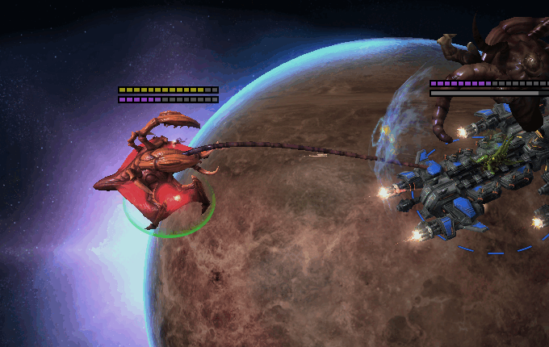
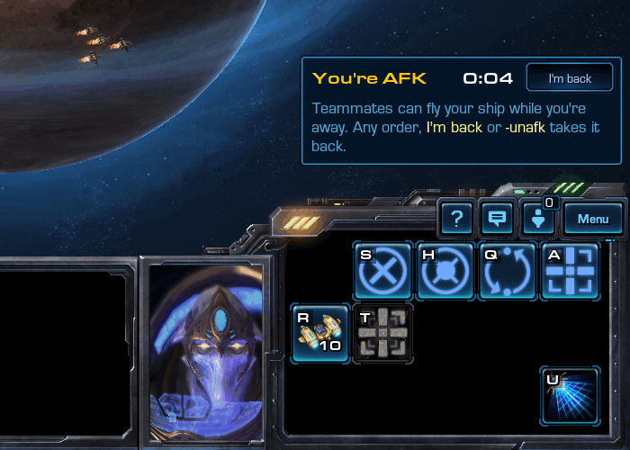
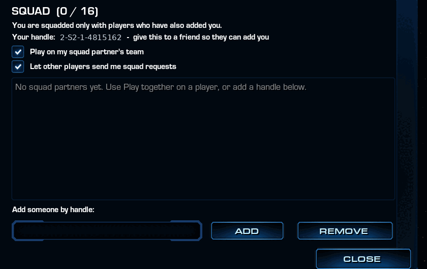
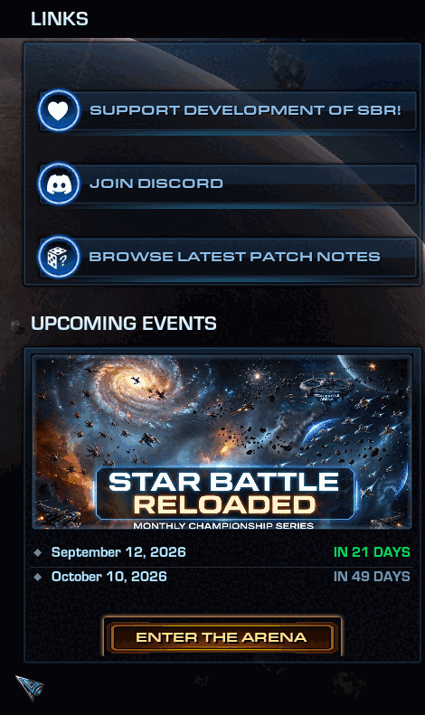

Fifteen maps join the pool, one leaves, and the standard list stops offering the same battlefield twice. The one leaving is Four Lanes I — out of the lobby list and the random pools after persistent negative feedback; Four Lanes II stays. All 31 maps are in the map pool catalogue, with full-size layouts, per-map figures and a guide to reading the previews.
Fifteen community maps join the pool, in a new Experimental category for maps that haven't been reviewed or playtested yet. They're pickable by name in the lobby — marked with a leading * so you can see at a glance that they're unproven — and there's a new Random [Experimental] entry to roll one at random.
Experimental maps are deliberately left out of Random [All], the lobby default, so nobody lands on an untested layout without choosing to. A map that plays well graduates into the Community pool and loses its *; one that doesn't gets pulled. The old Random [Misc] entry is now Random [Community].
Fourteen of the fifteen run VoivoD's own faster economy: light fighters spawn about 10% more often (every 1.36s instead of 1.5s), heavy fighters 25% more often (48s instead of 60s), and siege fighters four times as often (90s instead of 360s). Mindfuck is the exception and runs its own numbers.
Some of these maps place their objects at random on each load, so no two matches use quite the same field. Layouts, per-map figures and VoivoD's own notes on each map — including which were drafted with LLM assistance and then fixed and tuned by hand — are in the map pool catalogue.
The standard map list has been showing ten names for five battlefields: every built-in layout shipped under two skyboxes, each with its own lobby entry, identical in play right down to object placement.
Each pair now has a single entry, renamed to say what you're actually picking:
| Now reads | Retired duplicate |
|---|---|
| Rocks - Braxis Alpha | Avernus |
| Rocks & Cloud - Castanar | Ulaan |
| Tunnels - Port Zion | Char |
| Clouds - Ulnar | Skygeirr |
| Open - Deep Space | Korhal City |
Nothing about how these maps play has changed. What goes is five skyboxes — the survivors were picked for how clearly gameplay objects read against the sky, not for looks, so Avernus's planet-and-sunflare is the real casualty.
The retired backgrounds are still available in the map editor, in sandbox and to saved custom maps — they're only gone from the lobby list.
Jamming Systems has stopped hiding the Frigate and started jamming the enemy instead.
The same enemy ship, in the same place, seen on radar from outside the bubble and from inside it:
Shield Booster picks up the out-of-combat shield regeneration that used to ride on Jamming Systems, at a quarter of its old strength.
Fusion Torpedo now clears drone and mine fields. Experimental in 5.3: these numbers may be retuned or reverted after real games.
The full change, and what you'll run into: Torpedo & PDD — the change, with the reasoning in by the numbers.
Posthumous Mitosis is now called Endless Swarm, and it has been rebuilt into a full upgrade rather than a death trigger. Owning it changes how the swarm lives, not just how it dies.
Dark Swarm now heals your own side while it's up. Until now the cloud did nothing but stop ranged weapons firing into it.
Decay has been rebuilt around a different trigger, and it is now cheaper to reach, weaker at full stacks, and no longer all-or-nothing.
It used to hang on Corrosive Acid, which does nothing for the Acid Spores a battle Guardian actually fights with — so reaching Decay meant managing energy under denial. Tying it to the spores removes that layer.
Brood Lord acceleration is back to where it was before 5.0 — 1.25 → 0.1875, with deceleration brought down to match. Over 20 units of open space, a Brood Lord now takes about 18.8s to arrive, up from 14.6s. The faster acceleration cut the wrong way: players with the APM to micro Brood Lords did so just as much as before, while everyone else found them less forgiving. Corruptors are unchanged.
Infestation is now a tether rather than a ten-second window to steal a ship. The target is held while the Queen pays for it in life, and a killing blow while it's tethered still steals the ship.

Parasite now drains ships that can't regenerate energy — a cloaked Void Ray, an Arbiter under its Cloaking Field — which used to be immune: −5/s (−17/s with four stacks) where it was 0. Ships that do regenerate drain as before. The parasite also now shows its stack count, growing and shifting from green to red.
Ensnare now hits enemies only — it used to web allies in the area too. On capital ships it also halves acceleration, on top of the existing slow and turn-rate cut, and webbed ships show a new purple web.
Protective Brood costs 75 energy, down from 100.
Blinding Cloud now does what it was always meant to — blind things — and reaches the minions that used to ignore it entirely.
The full rework, with the reasoning and measurements behind each change: Queen — the rework.
Point Defense Drone now has 3 charges, with one restored every 18 seconds. A Raven can re-drop at most three drones in a row, then one every 18 seconds; this only limits a Raven with enough energy regeneration to recast without end. Experimental in 5.3, alongside the Fusion Torpedo change. The tooltip now also states the drone's intercept range. More in Torpedo & PDD — the change.
Public Balanced lobbies no longer seat players by rating. Sides are always even. Ratings are still recorded, shown and updated after every game; they just no longer decide who plays with whom. Premade lobbies set to FFA teams keep rating-based seating. How squads work in Balanced lobbies: Balanced lobbies.
Selecting a teammate's capital ship now shows their command card — completed upgrade levels, cooldowns, charges, and the Upgrade and Install menus to browse — where it used to say "You cannot control this unit". It's read-only; nothing on it issues an order. More in Teammate card.
Both the seating change and the teammate card started as a community contribution by Pornexus.
An idle player no longer leaves their team a ship short. After 30s with no order, key or camera movement, or straight away with -afk, the ship is opened up to the team: a teammate can take control from the leaderboard, fly it and buy its upgrades, just as with a leaver's ship. You keep control throughout.
-unafk starts a countdown of 8s (15s if your ship has been fighting); then the ship is yours alone again.
How it works in detail: AFK handling.
Squads used to be claimed on the Battle.net lobby screen, in public, and hosts had started kicking squadded players on sight. There are now two ways to pair — a private lobby slot and a squad list on your profile — and neither tells the rest of the lobby anything.
The lobby slot is private now. You and your partner claim the same squad number as before, but only you can see your own pick — so agree on a number beforehand. If nobody takes the other half, you're told privately at the start of the match.
Your squad is also a standing list on your profile. Set it up once instead of every lobby; a pair only counts when both of you hold each other on your lists.

Squads no longer break team sizes. Keeping a pair together could seat a 12-player game as 5v7 — with the top-rated pair in the lobby, every game. Up to six squads are honoured per match, up from five, lobby slots and list pairings together; any surplus is skipped for that match and its players are told.
In public Balanced lobbies, squads face squads. A squad is only honoured when another can be seated opposite it. A lone squad in a Balanced lobby doesn't activate, and nobody is told; one left over when others are kept is told it sits out.
In Premade lobbies with FFA teams, where the rating balancer still seats the teams, a squad counts toward the seating — so a strong player can't pair with an underrated alt to bend the balance. The balancer skips the highest-rated squads first, and no longer counts a partner who left before the match, who could add up to 400 points to your seating rating, or pins a player whose partner never showed.
There's a full walkthrough of the list and the lobby slot, with screenshots.
The end-of-game screen now carries an UPCOMING EVENTS card alongside the existing links, listing the next tournament dates with a live countdown against each one — TODAY, TOMORROW, or IN n DAYS, with the nearest date highlighted. Dates drop off the card as they pass, and once they've all gone the card disappears with them. An ENTER THE ARENA button goes straight to the tournament page.

The card and the loading-screen takeover below both reached the live map early, in the 5.2 hotfix for the September tournament.
The default loading screen has been redone around AmigoDeer's cockpit art. Left: a short ask to support the project, with a Ko-fi button. Right: links to starbattle.live, starbattle.pro, the patch notes for the build you're loading, Discord and Abra's casts, each opening in your browser. Centre: four slides rotating every six seconds — starbattle.live, starbattle.pro, Abra's latest casts and a tip; hover to pause.
See it in motion: the new loading screen on YouTube.
The loading screen can now hand itself over to a full-screen tournament promo when an event is scheduled; outside an event window you get the default screen above. The loading bar and its percentage stay on top of the promo, so you can still see how far along the load is.
The Toggleable Shields option and the game-data variant selector next to it have both been removed from the lobby. Both were experiments that never graduated.
Two locks keep some ships out of reach until you've earned them. The newbie lock opens ships by games played and applies in every lobby on every region. The veteran lock opens them by wins, and only switches on when a lobby is experienced enough — both teams fielding three players with 50+ wins.
Both locks now share one ladder, and it is much shorter. Each tier adds one ship per race, so a restricted player always has a ship of every race to pick:
| Tier | Ships | Newbie lock | Veteran lock |
|---|---|---|---|
| 0 | Battlecruiser | first game | open |
| 1 | Frigate, Colossus, Overlord | 4 games | 5 wins |
| 2 | Raven, Arbiter, Queen | 8 games | 10 wins |
| 3 | Dreadnought, Carrier, Leviathan | 12 games | 15 wins |
| 4 | Void Ray, Guardian | 14 games | 20 wins |
The old veteran ladder went race by race — every Terran ship open by 15 wins while the Overlord waited until 30, the Leviathan 50, the Carrier 60 and the Queen 70; it now tops out at 20. Under the newbie lock only the Void Ray and Guardian open later, by two games; the Overlord, Leviathan and Carrier open sooner.
The veteran lock now applies only in Premade lobbies (still not on US), where ship restrictions are off unless the host turns them on. In public Balanced lobbies the experience gate was almost always met, so the lock ended up binding newcomers and low-win regulars rather than the experienced lobbies it was meant for.
Lost your bank? Your recorded games count again. The match history that was supposed to cover veterans without a bank had shipped empty since January 2022, and on EU pointed at a table that never existed.